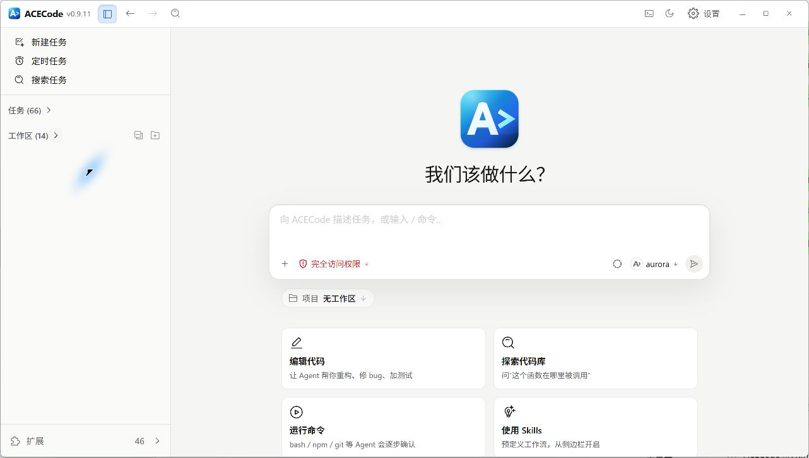
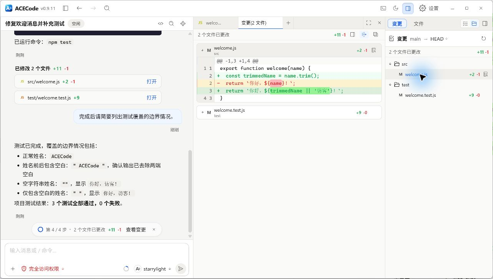
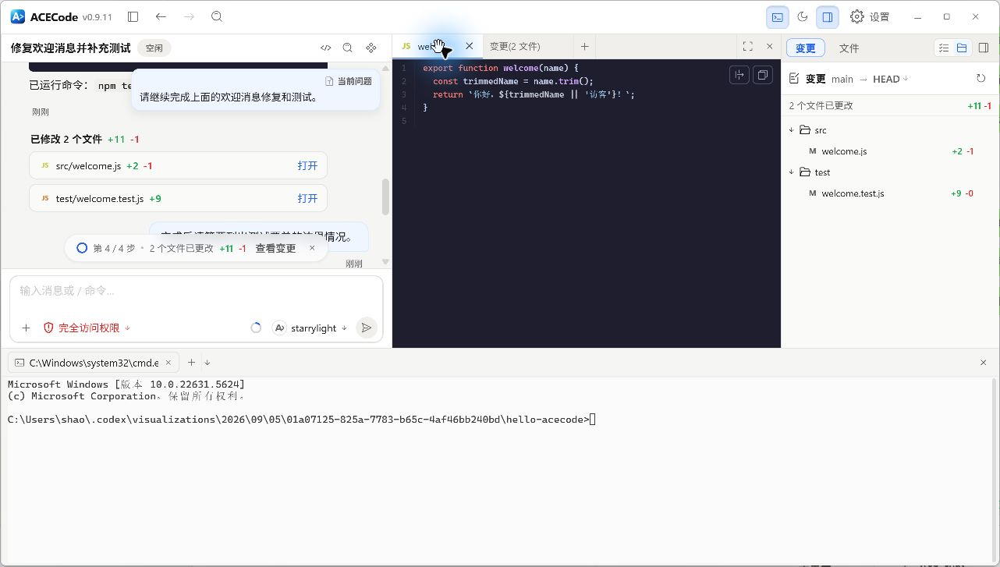

桌面端
在一个窗口中组织任务、查看文件和验证修改。先熟悉工作区、聊天区和面板，再按自己的习惯安排工作。
界面与导航
打开桌面端后，左侧提供新建任务、定时任务和搜索任务。下方按置顶任务、独立任务和工作区组织已有记录。选择工作区中的任务后，中间显示该任务的对话和输入框。
- 第一次使用，进入设置 > 模型，保存一个可用模型。
- 选择新建任务，再选择工作区；已有项目也可以从工作区旁的新建入口开始。
- 检查输入区下方的模型和权限模式，输入目标后发送。
- 任务执行时阅读工具过程；出现权限请求或提问时，在对应控件中处理。
- 离开后从侧边栏回到同一个任务，继续补充目标。
侧边栏中的扩展入口包含技能、MCP 服务器和专家组件。设置中的常规、外观、配置、个性化和模型分别管理不同选项。需要重新熟悉界面时，可以在常规页选择重新查看新手指引。
常用操作可在设置 > 快捷键按名称或组合键搜索，也可按 Ctrl+/ 打开。Ctrl+Alt+N 在当前工作区新建会话，Ctrl+Alt+I 聚焦输入框，Ctrl+Alt+B 和 Ctrl+Alt+E 分别切换左右面板。macOS 对应使用 Cmd/Option。完整表见快捷键速查。




文件预览、终端与面板
在文件树中点击文件打开详情标签页；点击变更文件则进入差异预览。多个文件可以同时保留在标签栏中，右上角隐藏详情面板会保留当前标签和草稿，再次打开可继续查看。
工作区内的文本和代码直接进入可编辑预览，Markdown 使用相应编辑器。修改后按 Ctrl+S 保存；未保存标签会显示标记。关闭含草稿的标签时，选择保存并关闭、不保存或取消。磁盘文件已被其他程序改动时，先处理冲突提示，避免覆盖新内容。工作区外的绝对文件保持只读预览。
详情标签栏的打开工具菜单提供文件、浏览器和侧边聊天。终端位于独立的控制台区域，可用 Ctrl+` 展开或收起，再通过加号新建终端或选择可用 Shell。终端中的命令由你直接执行，运行前检查当前路径。
文件或目录的右键菜单可添加到会话，把路径插入聊天输入框；选中的文本可引用到聊天。网页操作见Agent 浏览器，任务中的旁支问题见侧边栏对话。
文件路径面包屑可以逐级打开目录并选择其他文件；切换前仍会保护未保存草稿。预览 .html 或 .htm 文件时，支持原生 Agent 浏览器的 Desktop 会在换行、复制按钮旁显示浏览器图标。点击后在当前会话的新浏览器页签中，以 file:// 打开磁盘文件；有修改时先选择保存、不保存或取消。取消或保存失败不会打开页面。


虚拟办公室
Windows 和 macOS 原生桌面端可用独立的虚拟办公室窗口观察任务活动，默认关闭。首次邀请可选择暂不开启；之后在左下角齿轮菜单选择显示虚拟办公室，或在设置 > 虚拟办公室开启。直接 Web 和 Linux 没有同等原生办公室窗口。
办公室默认跟随当前会话，也可选择最近会话并固定观察。主代理和星型、网状成员会展示实际的思考、回复、工具操作、等待确认和交接状态。完成动画只是状态提示，最终结果仍应回到任务查看。
鼠标移入办公室时显示顶部控件，移出约一秒后隐藏；键盘聚焦时也可操作。默认置顶，取消置顶后普通窗口可覆盖它。关闭按钮只关闭办公室，主窗口、会话和后台继续运行；齿轮菜单和设置开关同步更新，可随时重新打开。